株式会社智翔館 社内向け
イベント申込管理
教室担当者マニュアル
イベントの申込をふやすために、教室担当が「誰に・何をするか」を名簿で見て、チラシ・声掛け・反応を記録する画面の使い方をまとめています。申込は、チラシの QR コード（Google フォーム）から申し込まれると、名簿に自動で出ます。
- 対象
- 教室担当の職員（小中等部・RED個別・高等部）
- アプリ
- 智翔館アプリ「イベント申込管理」（v1.36.0・2026年11月の画面）
- いまのイベント
- トップリーダーと学ぶワークショップ2026 〜薬剤師編〜（長崎国際大学 薬学部 × 智翔館）12月3日（木）19:30〜21:00
- 最新版
- 智翔館アプリのヘルプデスク「マニュアル」タブからダウンロードできます
- 作成
- 2026年11月
※ 写真に写っている生徒・職員の氏名、記録、フォームの回答は、説明のために用意した架空の例です。
- 1チラシを渡す渡したらスイッチをオン。クラスで配ったら「一括で記録」
- 2声を掛ける★（重点）の生徒には、直接声を掛けます
- 3反応を記録する参加したい／検討中／不参加。検討中なら保護者へ案内
- 4申込を確かめるフォームから申し込まれると、自動で「申込済」になります
- 画面には「次にすること」が生徒ごとに出ます。上から順に進めれば、やり残しがなくなります。
- 薬剤師・医療系を目指す生徒は「重点」として ★ が付き、名簿の先頭に並びます。ぜひ受けてほしい生徒です。
- 申込は画面からは入れません。生徒・保護者がチラシの QR コードのフォームから申し込むと、名簿に出ます（第5章）。
- 見えるのは自分の部門の生徒だけです（小中等部でログインすると小中等部の生徒、RED個別なら RED個別の生徒、高等部なら高等部の生徒）。
- 智翔館アプリの総合メニューのイベント申込管理のカードから開きます。開くと「声掛け名簿」が出ます。
スマホでも使えます
教室で声を掛けながら、スマホで記録できます。表は横に動かせます。氏名の列は左に残るので、右のメモまで動かしても、誰の行か分かります。氏名の下にも「次にすること」が出ます。
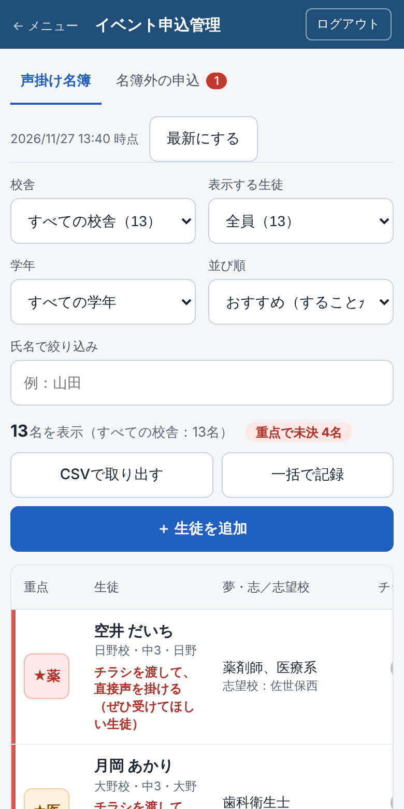
図2 スマホで開いた声掛け名簿
2-1画面の全体
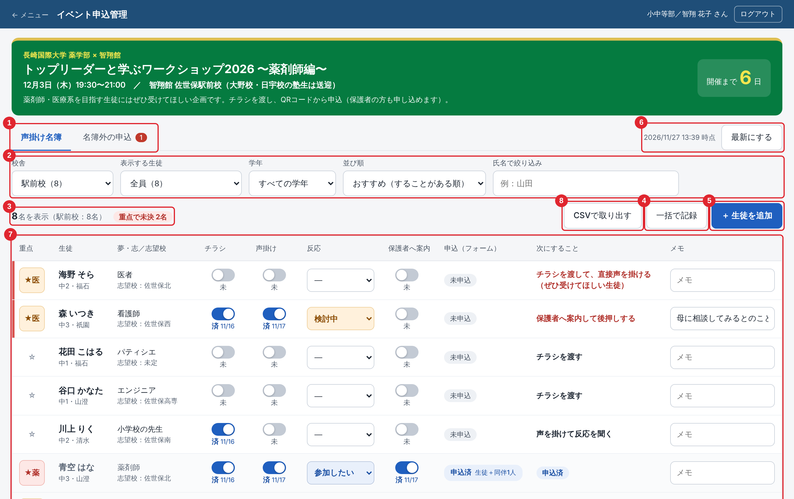
図3 声掛け名簿
- 1
タブ 「声掛け名簿」と「名簿外の申込」を切り替えます。「名簿外の申込」の赤い数字は、名簿の誰とも結び付いていない申込の件数です（5-2）。
- 2
絞り込みの並び 校舎・表示する生徒・学年・並び順・氏名で、名簿を絞り込み・並べ替えます（第4章）。まず校舎で自分の校舎を選びます。
- 3
件数 いま表示している人数と、重点でまだ決まっていない生徒の人数です。
- 4
一括で記録 何人もまとめて、チラシ配布済み・声掛け済みなどを記録します（3-3）。
- 5
＋ 生徒を追加 名簿にいない生徒を足します（5-3）。
- 6
最新にする 名簿と申込を読み直します。左に、読み込んだ時刻か、保存の様子（保存中…／✓ 保存しました）が出ます。
- 7
名簿 ここで記録します。左に赤い線がある行は、重点でまだ決まっていない生徒です。
- 8
CSVで取り出す いま表示している生徒の名簿を、CSV（Excel で開けるファイル）で保存します（4-1）。
2-2名簿の1行の見方
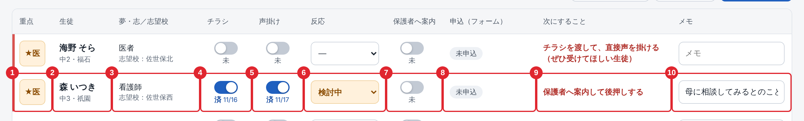
図4 名簿の1行（列の見方）
- 1
重点 ★薬＝薬剤師・薬学、★医＝医療系、★＝担当が付けた生徒、☆＝重点でない生徒。押すと付け外しできます。
- 2
生徒 氏名と、学年・学校（校舎を「すべての校舎」にしているときは校舎も）。「追加 ✎」が付いている生徒は、アプリで足した生徒です。
- 3
夢・志／志望校 名簿のスプレッドシートに入っている内容です。声を掛けるときの話題に使えます。
- 4
チラシ チラシを渡したらオンにします。
- 5
声掛け 本人に声を掛けたらオンにします。
- 6
反応 聞けた反応を選びます（参加したい／検討中／不参加）。
- 7
保護者へ案内 保護者に電話・LINE・面談などで案内したらオンにします。
- 8
申込（フォーム） フォームから申し込まれると「申込済」と出ます。まだなら「未申込」です。ここは押して変えることはできません。
- 9
次にすること この生徒に、いま何をすればよいかが出ます（2-3）。
- 10
メモ 気づいたことを書きます（例：母に相談してみるとのこと）。
2-3「次にすること」と「重点（★）」
「次にすること」は、記録に合わせて自動で変わります。
| いまの状態 | 次にすること | 記録のしかた |
|---|
| まだ何もしていない | チラシを渡す
（★の生徒：チラシを渡して、直接声を掛ける） | 渡したら「チラシ」をオン |
| チラシを渡した | 声を掛けて反応を聞く
（★の生徒：本人に直接声を掛ける） | 声を掛けたら「声掛け」をオン |
| 声を掛けた | 反応を聞いて記録する | 「反応」を選ぶ |
| 反応が「参加したい」 | QRからの申込を後押し。保護者にも案内する | 保護者に案内したら「保護者へ案内」をオン |
| 反応が「検討中」 | 保護者へ案内して後押しする
（案内のあと：もう一度声を掛けて、決めてもらう） | 「保護者へ案内」をオン。決まったら「反応」を直す |
| フォームから申し込んだ | （なし。「申込済」と出ます） | 記録は要りません |
| 反応が「不参加」 | （なし。「不参加」と出ます） | ― |
重点（★）の生徒から声を掛けてください
夢・志や志望校に「薬剤師」「薬学」（★薬）、「医」「看護」「療法士」など（★医）の言葉がある生徒に、自動で ★ が付きます。名簿では先頭に並び、左に赤い線が付きます。
理系に興味がある・保護者が医療関係など、ほかにも受けてほしい生徒がいれば、☆ を押して ★ を付けてください。RED個別・高等部の名簿には夢・志が入っていないので、★ は担当が付けます。まちがって付いている ★ は、押すと外せます。
3-1スイッチで記録する（チラシ・声掛け・保護者へ案内）
スイッチを押します。つまみが右に動いて色が付き、オンになります。
スイッチの下に「保存中…」と出ます1。画面の右上2と下3にも「保存中…」と出ます。
保存できると、スイッチの下が「済 11/27」（今日の日付）になり、少しのあいだ ✓ が出ます。
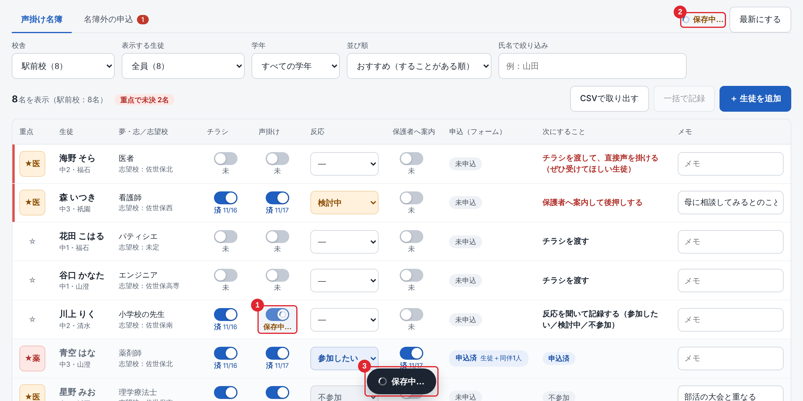
図5 「声掛け」のスイッチを押した直後（保存中）
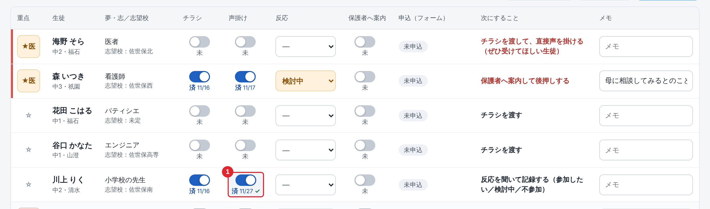
図6 保存できたところ。「済」と今日の日付、✓ が出ます1
| 見た目 | 意味 |
|---|
| つまみが左・灰色・「未」 | オフ（まだしていない） |
| つまみが右・青・「済 11/27」 | オン（その日にした） |
| 「保存中…」 | 保存している途中。このあいだは、同じスイッチをもう一度押しても変わりません |
| ✓ | 保存できた（少しすると消えます） |
「保存中…」のあいだは、押し直さないでください
スプレッドシートに保存するので、1〜3秒かかることがあります。「保存中…」が出ていれば、ちゃんと受け付けられています。ほかの生徒・ほかのスイッチは、待たずに続けて押せます。
- まちがえてオンにしたときは、保存が終わってからもう一度押すと、オフに戻ります。
- 「保存できませんでした」と赤く出たときは、スイッチが元に戻っています。もう一度押してください（第6章）。
- 記録を付けても、行の並びはその場では変わりません（続けて入れやすいように）。並べ直したいときは、「表示する生徒」か「並び順」を選び直すか、最新にするを押します。
3-2反応とメモを入れる
- 反応は、欄を押して「参加したい」「検討中」「不参加」から選びます。選ぶと、欄の下に「保存中…」→「✓ 保存しました」と出ます。
- 反応を入れると、「声掛け」がまだオフでも、自動でオン（今日の日付）になります。反応を聞けたなら、声は掛けているためです。
- メモは、欄に書いて Enter を押すか、欄の外を押すと保存されます。
- 反応が変わったら（検討中 → 参加したい など）、選び直してください。
3-3何人もまとめて記録する（一括で記録）
クラスでチラシを配ったあとなど、何人もまとめて記録するときに使います。先に、絞り込みの並びで校舎・学年を選んでから一括で記録を押すと、その生徒だけが並ぶので選びやすくなります。
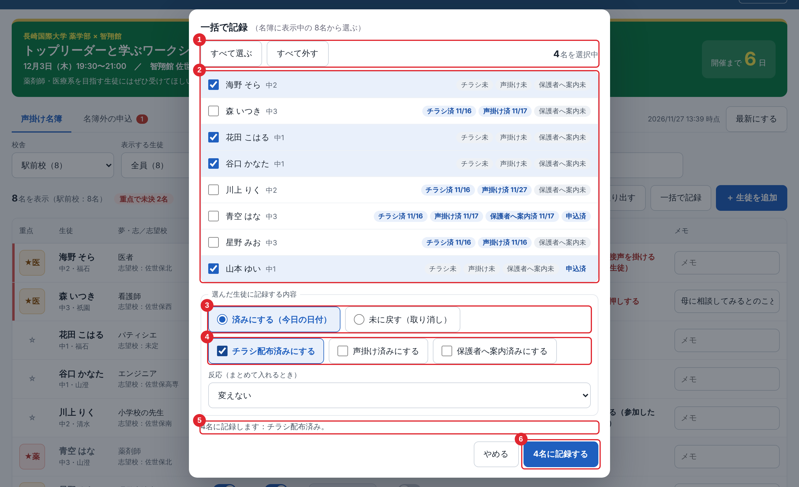
図7 一括で記録
- 1
すべて選ぶすべて外す 右に、選んでいる人数が出ます。
- 2
生徒の一覧 名簿に表示している生徒が並びます。氏名の左のチェックボックスで選びます。右に、いまの記録（チラシ済・声掛け未 など）が出ます。
- 3
済みにする／未に戻す ふつうは「済みにする（今日の日付）」のままです。まちがえて記録したものをまとめて取り消すときは「未に戻す」にします。
- 4
記録する内容 「チラシ配布済みにする」「声掛け済みにする」「保護者へ案内済みにする」から選びます（いくつでも）。その下の「反応」で、反応もまとめて入れられます。
- 5
確かめ 「4名に記録します：チラシ配布済み」のように、何人に何を記録するかが出ます。
- 6
◯名に記録する 押すと記録して、窓が閉じます。
- すでに済みの生徒の日付は変わりません（その生徒は人数に数えません）。
- やめるときはやめるか、窓の外を押します。
| 欄 | 選べるもの |
|---|
| 校舎 | すべての校舎／自分の部門の校舎。まず自分の校舎を選びます |
| 表示する生徒 | 全員（最初はこれ）／することがある（申込済・キャンセル・不参加の生徒は出ません）／重点で未決／未着手／参加したい・検討中／申込済／キャンセル／不参加 |
| 学年 | すべての学年／名簿にある学年 |
| 並び順 | おすすめ（することがある順）／学年（上の学年から・下の学年から）／氏名／校舎／進み具合（未着手から）／更新が新しい順 |
| 氏名で絞り込み | 氏名の一部を入れると、その生徒だけが出ます（「表示する生徒」に関係なく、選んだ校舎・学年の全員から探します） |
こんなときは
今日声を掛ける生徒を見たい → 表示する生徒「することがある」。★ の生徒が上に並びます。
まだ何もしていない生徒だけ見たい → 表示する生徒「未着手」。
あと一押しの生徒を見たい → 表示する生徒「参加したい・検討中」。
クラスごとに配った分を記録したい → 校舎と学年を選び、表示する生徒「全員」にして「一括で記録」。
申し込んだ生徒を確かめたい → 表示する生徒「申込済」。
- 「氏名」の並びは、漢字の文字の順です（名簿にふりがなが無いので、五十音順ではありません）。生徒を探すときは「氏名で絞り込み」が早いです。
- 学年が入っていない生徒は、学年の並びではいちばん後ろに並びます。
4-1名簿を CSV で取り出す
CSVで取り出す（図3 の 8）を押すと、いま表示している生徒の名簿が、CSV のファイルで保存されます。Excel でそのまま開けます。
- 校舎ごとに取り出す 先に「校舎」で校舎を選んでから押します。ファイルの名前は「イベント名簿_駅前校_2026-11-27.csv」のように、校舎と日付が入ります。
- 「すべての校舎」のまま押すと、全部の校舎が1つのファイルに、校舎ごとにまとまって入ります。
- 申し込んだ生徒だけ取り出す 表示する生徒「申込済」を選んでから押します（当日の参加者の名簿に使えます）。学年・氏名の絞り込みも、そのまま効きます。
- 入るもの：部門・校舎・学年・学校・氏名・重点・夢・志・志望校、チラシ・声掛け・保護者へ案内の日付、反応、申込（申込済／キャンセル／未申込）、参加する人・同伴の人数・申込日時、進み具合、次にすること、メモ、更新日時・更新者。
- フォームに書かれた電話番号・メールアドレス・先生への質問は入りません。必要なときは、申込済の印を押して回答を見てください。
- 取り出したファイルには生徒の氏名が入っています。使い終わったら消し、社外に送らないでください。
5-1申込済・未申込
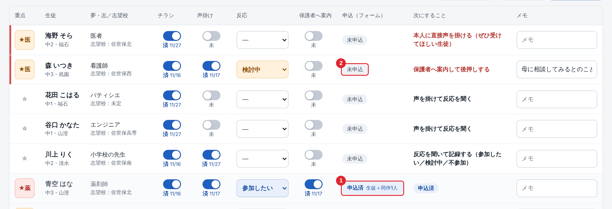
図8 申込の列。申込済1と未申込2
- 申込済 生徒 … 生徒本人が参加します。
- 申込済 生徒＋同伴1人 … 生徒と、一緒に参加する方（保護者の方など）1人が参加します。人数は、フォームの「一緒に参加される方の人数」です。
- 未申込 … まだフォームの回答がありません。
- 申込済の印を押すと、フォームの回答（学校名・連絡先・希望進路・先生への質問など）が出ます。
- 申込は、画面を開いたとき・最新にするを押したときに読み直します。「さっき申し込んだ」と言われたら、最新にするを押してください。
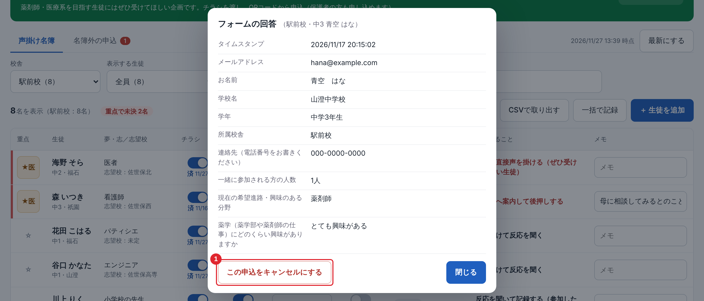
図9 申込済の印を押すと出る、フォームの回答。キャンセルにするとき1（5-4）
申し込んだはずなのに「未申込」のままのとき
フォームに書いた氏名が、名簿の氏名と合っていないことがあります（ひらがなで書いた、保護者の方の氏名で申し込んだ、など）。その申込は「名簿外の申込」に出ているので、5-2 の手順で生徒に結び付けてください。
5-2名簿外の申込
フォームの回答のうち、名簿の誰とも結び付かなかったものが並びます。タブの赤い数字が件数です。ときどき開いて、0件にしておいてください。
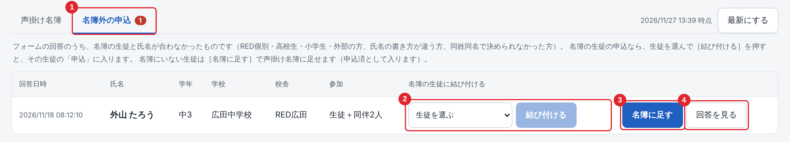
図10 名簿外の申込
- 1
名簿外の申込のタブ 赤い数字が、結び付いていない申込の件数です。
- 2
名簿の生徒に結び付ける 名簿にいる生徒の申込なら、生徒を選んで結び付けるを押します。その生徒が「申込済」になります。
- 3
名簿に足す 名簿にいない生徒なら、ここから名簿に足します（5-3）。
- 4
回答を見る フォームの回答の中身を見ます。だれの申込か分からないときに使います。
| ここに出るのは | すること |
|---|
| 氏名の書き方が名簿とちがう（ひらがな・旧字体・あだ名） | 生徒を選んで結び付ける |
| 保護者の方が、自分の氏名で申し込んだ | お子さんを選んで結び付ける |
| 同じ氏名の生徒が何人かいて、決められなかった | 学年・校舎を見て、生徒を選んで結び付ける |
| 名簿にいない生徒（入ったばかりの生徒・外部の方） | 名簿に足す（外部の方で、追いかけなくてよければ、そのままでかまいません） |
| ほかの部門の校舎が書いてある | その部門の担当が対応します。そのままにしてください |
まちがえて結び付けたときは、声掛け名簿でその生徒の「申込済」の印を押し、この生徒との結び付けを外すを押します。
5-3名簿にいない生徒を足す
名簿のスプレッドシートに入っていない生徒（入ったばかりの生徒など）は、アプリから足せます。足した生徒は、自分の部門の名簿に入ります。
- 名簿外の申込から足す 名簿に足すを押すと、フォームの氏名・学校・学年・校舎・希望進路が入った状態で窓が開きます。確かめて追加するを押します。その生徒は「申込済」として名簿に入ります。
- 声掛け名簿から足す ＋ 生徒を追加を押し、校舎と氏名（必須）、学年・学校・夢・志・志望校を入れて追加するを押します。
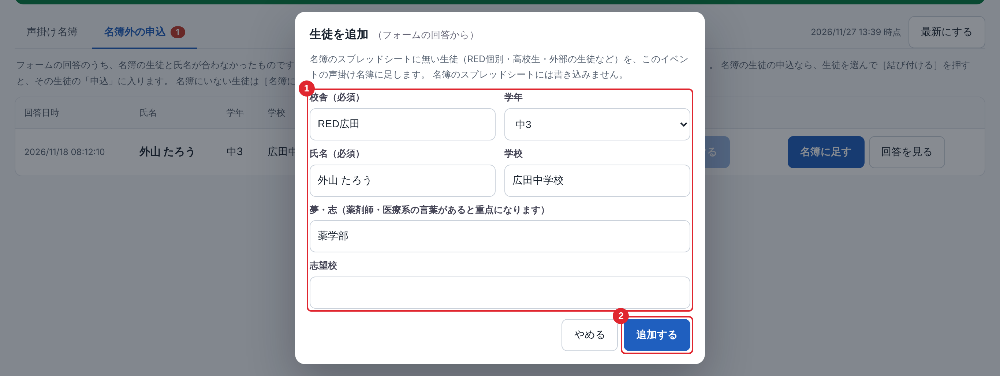
図11 生徒を追加。内容を確かめて1、追加する2
- 校舎は、名簿にある校舎の名前と同じに書いてください（候補から選べます）。
- 夢・志に「薬剤師」「看護師」などを入れると、★（重点）が付きます。
- 同じ氏名の生徒がすでに名簿にいると、注意が出ます。同じ生徒なら足さずに、5-2 の結び付けるを使ってください。
- 足した生徒には「追加 ✎」の印が付きます。押すと、内容を直す・名簿から外すができます。
- もとの名簿（スプレッドシート）にいる生徒の氏名・学年・夢・志は、アプリからは直せません。管理部門に伝えてください。
5-4申込をキャンセルにする
フォームから申し込んだあとで「やはり参加できなくなった」と連絡があったときは、その申込をキャンセルにします。キャンセルにした申込は、申込の数に入りません。
声掛け名簿で、その生徒の申込済の印を押します（フォームの回答が出ます。図9）。
この申込をキャンセルにする（図9 の 1）を押します。
確かめの文が出るので、キャンセルにするを押します。
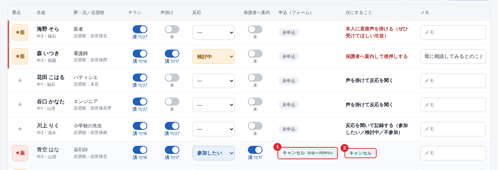
図12 キャンセルにした生徒の行。申込の列1と、次にすること2が「キャンセル」になる
- 申込の列がキャンセル（灰色）になり、「次にすること」も「キャンセル」になります。校舎ごとの進み具合でも、申込の数から外れ、「キャンセル」の数に入ります。
- まちがえたとき・やはり参加するとき 「キャンセル」の印を押し、キャンセルを取り消す（申込に戻す）を押すと、申込済に戻ります。フォームの回答は消えていません。
- キャンセルにしたあとで、その生徒がもう一度フォームから申し込むと、新しい申込で「申込済」になります。
- キャンセルにした生徒だけを見るときは、表示する生徒「キャンセル」を選びます。
- 「名簿外の申込」に出ている申込は、そのままではキャンセルにできません。先に生徒に結び付けるか、名簿に足してください（5-2・5-3）。
| こんなとき | こうしてください |
|---|
| 「保存できませんでした」と赤く出た | 押したスイッチ・反応は元に戻っています。少し待って、もう一度押してください。何度も出るときは、最新にするを押すか、ページを読み込み直します。それでも出るときは管理部門に伝えてください。 |
| 押したのに変わらない | 「保存中…」のあいだは、同じスイッチは変わりません。保存が終わるまで（1〜3秒）待ってください。 |
| まちがえてオンにした | 保存が終わってから、もう一度押すとオフに戻ります。何人もまちがえたときは、一括で記録で「未に戻す」を選びます（3-3）。 |
| 記録したのに、行の場所や「次にすること」の並びが変わらない | 続けて入れやすいように、並びはその場では変えていません。「表示する生徒」か「並び順」を選び直すか、最新にするを押すと並べ直します。 |
| 申し込んだはずの生徒が「未申込」 | 最新にするを押します。それでも変わらなければ、「名簿外の申込」に出ていないか見て、結び付けます（5-2）。 |
| 申し込んだあとで「参加できなくなった」と言われた | その生徒の申込済の印を押し、この申込をキャンセルにするを押します（5-4）。フォームの回答は消えず、あとで取り消せます。 |
| 口頭・紙で「参加します」と言われた | 申込は画面からは入れられません。チラシの QR コードのフォームから申し込んでもらってください（その場で一緒に入れてもかまいません）。それまでは、反応を「参加したい」にしておきます。 |
| 名簿を Excel で見たい・印刷したい | 校舎を選び、CSVで取り出すを押します（4-1）。 |
| 名簿に生徒がいない | 校舎・表示する生徒・学年の絞り込みを確かめます（「全員」にすると全員出ます）。それでもいなければ、＋ 生徒を追加で足します（5-3）。 |
| 退会した生徒が名簿に出ている／氏名・学年がちがう | もとの名簿（スプレッドシート）を直す必要があります。管理部門に伝えてください。 |
| ほかの部門の生徒が見えない | 見えるのは自分の部門の生徒だけです。全部門の進み具合は、管理部門が見ています。 |
| 「保存先が未設定」「スプレッドシートの読み書きに失敗しました」と出る | 管理部門に伝えてください。 |
| ログインの画面に戻った | ログインが切れています（12時間で切れます）。もう一度ログインしてください。 |
不具合・要望は
智翔館アプリのヘルプデスク「ご意見・不具合の報告」から送ってください。